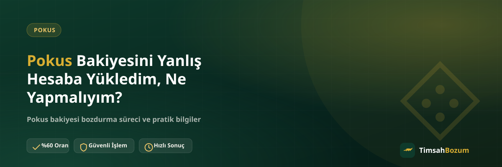

Pokus bakiyesi yüklerken hesap bilgisini hatalı girmek, özellikle hızlıca yapılan işlemlerde sık karşılaşılan bir durum. Bakiye başka bir hesaba gittiğinde akla gelen ilk soru "bu bakiyeyi geri alabilir miyim, bozdurabilir miyim" oluyor. Bu yazıda böyle bir durumda neyin mümkün neyin mümkün olmadığını, TimsahBozum'un bu süreçteki rolünü ve dikkat etmen gereken noktaları açıklıyoruz.
Yanlış Hesaba Yükleme Durumunda Gerçekte Ne Oluyor?
Pokus bakiyesi, yükleme sırasında girilen hesap bilgisine göre o hesaba tanımlanır. Hesap numarası veya kullanıcı bilgisi hatalı girildiğinde bakiye, senin kontrolünde olmayan bir hesaba geçmiş olur. Bu noktada bakiyenin kaderi tamamen yükleme işlemini yürüten platformun elindedir, çünkü bakiye artık o hesabın bir parçasıdır.
Bakiyeyi Geri Almak Mümkün mü?
Bu sorunun cevabı, yükleme işlemini yapan platformun kendi kurallarına bağlı. TimsahBozum bir bozum hizmeti olduğu için hesaplar arası bakiye transferine veya yükleme hatalarının düzeltilmesine müdahale edemiyor; bu konuda ilgili platformun destek kanalıyla iletişime geçmek gerekiyor.
TimsahBozum Bu Noktada Ne Yapabilir, Ne Yapamaz?
TimsahBozum'un hizmeti, elindeki Pokus bakiyesini nakde çevirmek. Bakiye kendi hesabında ve erişimin varsa, güncel bakiyeni gösteren bir ekran görüntüsü paylaşarak normal bozum sürecini başlatabilirsin. Ama bakiye başka bir hesaba yüklenmişse ve o hesaba erişimin yoksa, bu durum bozum sürecinin kapsamı dışında kalır; çünkü bozdurmak için önce bakiyenin kendi erişimin olan hesapta görünmesi gerekir.
Hesap Bilgisini Kontrol Etmeden Yükleme Yaparsan Ne Olur?
Bakiye yüklemeden önce hesap bilgisini bir kez daha kontrol etmek, bu tür hataların önüne geçmenin en pratik yolu. Hesap numarası, kullanıcı adı veya e-posta gibi bilgilerin doğruluğunu teyit etmeden işlemi tamamlamak, bakiyenin yanlış bir yere gitmesine ve geri dönüşü belirsiz bir sürece girmesine yol açabiliyor.
Bu Durum Sık Yaşanan Bir Şey mi?
Hesap bilgisini elle girerken yapılan küçük yazım hataları veya benzer görünen iki hesap bilgisini karıştırmak, bu tür durumların en sık nedenleri arasında. Yükleme hızlı yapıldığında bu kontrol atlanabiliyor, bu yüzden özellikle büyük tutarlı yüklemelerde bilgiyi iki kez kontrol etmek faydalı oluyor.
Kendi Hesabımda Olduğunu Düşündüğüm Bakiye Gerçekten Benim mi?
Bazen kafa karışıklığı, bakiyenin hangi hesapta olduğunu doğru hatırlayamamaktan kaynaklanıyor. Bozum işlemine başlamadan önce, bozdurmak istediğin bakiyenin gerçekten erişimin olan hesapta göründüğünden emin olmak, ileride çıkabilecek bir karışıklığı baştan önler.
Bakiye Kendi Hesabımdaysa Bozum Süreci Nasıl İşler?
Bakiye erişimin olan hesapta görünüyorsa, durum normal bir Pokus bozdurma işlemine döner. Güncel bakiyeni gösteren okunaklı bir ekran görüntüsü hazırlayıp WhatsApp üzerinden paylaşman, oranı teyit edip süreci ilerletmen için yeterli. Bakiye tabanlı bir hizmet olduğu için bakiyenin tamamını değil, istediğin bir kısmını da bozdurabilirsin.
Bu Durumu WhatsApp'ta Nasıl Anlatmalıyım?
Durumun biraz karışık görünse de anlatımı basit: hangi hesapta ne kadar bakiye olduğunu ve bu bakiyeyi bozdurmak istediğini kısaca belirtip güncel ekran görüntüsünü paylaşman yeterli. Karşı taraf durumu değerlendirip bakiyenin bozum için uygun olup olmadığını netleştirir.
Birden Fazla Yükleme Hatası Varsa Ne Yapmalı?
Bazı kullanıcılar aynı hatayı farklı zamanlarda birden fazla kez yapmış olabiliyor; bu durumda her bir yüklemenin ayrı ayrı kaydını (tarih, tutar, hedef hesap bilgisi) tutmak, destek sürecini takip ederken karışıklığı önler. Hangi yüklemenin hangi hesaba gittiğini net bir şekilde bilmek, ilgili platformla yapılan görüşmede süreci hızlandırır ve yanlış bir hesabı doğru bir hesapla karıştırma riskini azaltır.
Benzer Hatalardan Nasıl Korunursun?
Yükleme yapmadan önce hesap bilgisini kontrol etmek dışında, yükleme işlemini onaylamadan önceki son ekranda gösterilen özet bilgiyi de dikkatlice okumak faydalı bir alışkanlık. Çoğu yükleme platformu işlem öncesi hedef hesabı bir kez daha gösterir; bu adımı hızlıca geçmek yerine bir saniye durup kontrol etmek, geri dönüşü belirsiz bir hatayı önlemenin en kolay yolu.
Hangi Durumlar Bozum Kapsamına Girmez?
Bozum hizmeti, elinde erişimin olan ve görünür bir bakiye üzerinden çalışır. Bakiyenin başka bir kullanıcının hesabına geçmiş olması, hesaba erişiminin olmaması veya bakiyenin yükleme platformu tarafından henüz onaylanmamış olması gibi durumlar bu kapsamın dışında kalır. Bu tür durumlarda önce yükleme platformuyla iletişime geçip sorunun çözülmesini beklemek, bozum sürecinden önce atılması gereken adım olur.
Benzer şekilde, bakiyenin hangi hesapta olduğu konusunda tam netlik yoksa işleme başlamadan önce bu netliği sağlamak gerekir. Belirsiz bir bakiye bilgisiyle süreci başlatmak, ileride ek bir doğrulama ihtiyacı doğurup işlemi geciktirebilir.
Destek Kanalıyla İletişime Geçerken Nelere Dikkat Etmeli?
Yükleme platformunun destek kanalına yazarken işlem tarihini, yüklediğin tutarı ve hatalı girdiğini düşündüğün hesap bilgisini elinde tutman süreci hızlandırır. Bu bilgiler olmadan yapılan bir başvuru, karşı tarafın ek bilgi istemesine ve sürecin uzamasına yol açabilir. Elindeki belgeleri (yükleme onayı, ekran görüntüsü) düzenli tutmak, böyle bir durumda işine yarar. Başvuruyu yaptıktan sonra platformdan dönecek yanıtı beklerken, aynı hatayı tekrar yapmamak için güncel bilgiyi kontrol etme alışkanlığını bir kenara not etmen de ileride işine yarar.
Elindeki bakiye kendi hesabında ve bozdurmak istiyorsan, güncel ekran görüntünle WhatsApp hattımıza yazarak süreci başlatabilirsin.
İlgili Yazılar
- Pokus Bakiyesi Bozdurmadan Önce Nelere Dikkat Edilmeli?
- Pokus Bakiye Ekran Görüntüsü Nasıl Paylaşılır?
- Pokus Bozdururken Hesabıma Erişim Veriyor Muyum?